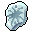
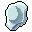
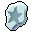
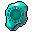

Renascimento
O fim de jogo: refazer o personagem mais forte.
O renascimento (Phoenix Rebirth) reinicia classe, atributos e habilidades para uma build nova, com habilidade e asas exclusivas de quem renasceu.
Passo a passo
- Comece com a Tink (Tourist - Tink, Icicle, Deep Blue
(1335, 469)): missões Who is the Guardian e Tough? Or troublesome?. - Escolha o caminho com o Albuda (Clan Chief - Albuda, Shaitan
(898, 3640)): Tough Difficulty (os monstros mais fortes do jogo) ou Troublesome Path (muitas etapas, pede paciência). Trocar depois custa 5 milhões de gold. - Junte as 8 runas da Rebirth Stone pelas missões do caminho:

Baby Rune (Caribbean Tour 2),
Roico Rune (Seek out Demonic Guide),
Leo Rune (Mark of a Warrior) e as runas 4 a 8 em Arduous Quest (caminho difícil) ou Game of Madness (caminho trabalhoso). - Entregue à Goddess (Pirate Hideout, Heaven
(1755, 908)) na missão Phoenix Rebirth, que pede 9.999 de reputação. Ela dá a
Rebirth Stone. - Com a pedra, fale com a Goddess → Rebirth Information → Phoenix Rebirth e escolha a classe nova.
Regras e o que você ganha
- Precisa estar sem nenhum equipamento, com a mochila destravada e 5 espaços livres.
- A classe nova tem que servir ao seu personagem (por exemplo, a Ami não vira Champion).
- Atributos voltam para 5 e os pontos são devolvidos para distribuir de novo; as habilidades de combate são zeradas e os pontos devolvidos.
- Na hora você ganha as Rebirth Wings do seu personagem e já aprende a habilidade de renascido da classe: Ethereal Slash (Crusader), Beast Legion Smash (Champion), Red Thunder Cannon (Sharpshooter), Holy Judgement (Cleric), Devil Curse (Seal Master) e Super Consciousness (Voyager).